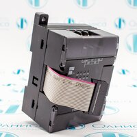
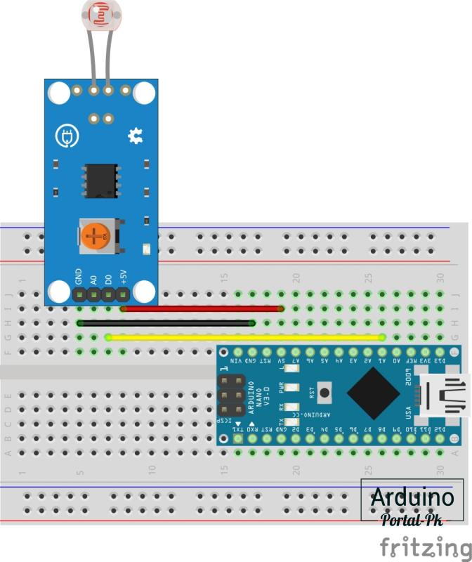

#28. Подключение модуля освещенности к Arduino.
olnisa.ru
CJ1W-ID231 Модуль расширения Omron

CP1W-8ER Модуль расширения Omron
CJ1W-ID232 Модуль расширения Omron
CJ1W-AD081-V1 Модуль расширения Omron

CJ1W-PRM21 Модуль интерфейсный Omron
В данном Arduino уроке подключим модуль освещённости к Arduino, и научимся настраивать датчик для работы при различной освещённости. В основе датчика лежит светочувствительный полупроводниковый прибор – фоторезистор. Что такое фоторезистор, и как его можно подключить к Arduino, рассматривали в предыдущем уроке: «Подключение фоторезистора к Arduino». В чем преимущество модуля освещённости, и как его использовать в Arduino проектах, рассмотрим в данном уроке.
Два вида моделей освещённости.
При покупке модуля освещённости, нужно определиться с вашей задачей. Что вы планируете собрать, и как должен работать модуль освещённости. Это связано с тем, что модули освещённости бывают разные. На фото ниже приведены 2 модуля освещённости.
Аналоговый модуль освещённости KY-018.
Arduino модуль освещённости KY-018 черного цвета. Этот модуль состоит из фоторезистора и линейного резистора 10 кОм. Сопротивление фоторезистора будет уменьшаться при наличии света, и увеличиваться при его отсутствии. Выход аналоговый, и он определяет интенсивность света.
Схема подключения модуля освещённости KY-018 к Arduino.
На модуль подается питание 5 Вольт, а в зависимости от освещенности в помещении, на выходе модуля (S) меняется напряжение от 0 до 5 Вольт. При подаче этого сигнала на аналоговый вход микроконтроллера, Arduino преобразует сигнал, при помощи АЦП, в диапазоне значений от 0 до 1023.
Скетч для модуля освещённости KY-018.
Так как у датчика выход аналоговый, как и у фоторезистора, код можно взять из предыдущего урока без изменения. Например, скетч Светильника с автоматическим включением.
byte sensorPin = A0;
byte ledPin = 3;
// Присваиваем имя для цифрового значения аналогового входа A0
// int округляет значения
int value = 0;
void setup() {
// Пин 3 со светодиодом будет выходом (англ. «output»)
pinMode(ledPin, OUTPUT);
// Пин A0 с фоторезистором будет входом (англ. «input»)
pinMode(sensorPin, INPUT);
}
void loop() {
// Считываем значение с фоторезистора на аналоговом входе A0
value = analogRead(sensorPin);
// value значение в диапозоне от 0 до 1023
// Полученные значения на аналоговом входе A0 делим на 4
//чтобы уложиться в диопозон от 0 до 255
data = value / 4;
// Включаем светодиод с полученной ранее мощностью - от 0 до 255
analogWrite(ledPin, data);
}
Copy
Цифровой датчик освещённости на LM393.
Модуль синего цвета устроен по-другому, и подключается уже к цифровому пину Arduino, и на выходе формирует логическую единицу, либо логический ноль. Давайте рассмотрим данный модуль и поговорим подробнее.
Модуль освещенности на LM393.
Модуль освещенности на LM393 используется для измерения интенсивности света в различных устройствах, таких как: автоматизация света (включение света ночью), в роботах (определение дня или ночи) и приборах, контролирующих уровень освещенности. Измерение осуществляется с помощью светочувствительного элемента (фоторезистора), который меняет сопротивление в зависимости от освещенности.
Технические параметры
Общие сведения датчик освещённости на LM393.
Существуют два модуля на базе LM393, их визуальное отличие только в количестве выводов (3 pin и 4 pin), дополнительный вывод добавлен для снятия прямых показаний с фоторезистора (аналоговый выход), по аналогии работы модуля KY-018. Рассмотрим четырех контактный вариант модуля. У этих двух модулей измерение осуществляется с помощью фоторезистора, который изменяет напряжение в цепи, в зависимости от количества света, попадающего на него. Чтобы представить, как свет будет влиять на фоторезистор, приведу краткую таблицу.
Модуль освещенности с четырьмя выводами содержит два выходных контакта, аналоговый и цифровой, и два контакта для подключения питания. Для считывания аналогово сигнала предусмотрен отдельный вывод «AO», с которого можно считать показания напряжения с 0 В … 3.3 В или 5 В, в зависимости от используемого источника питания. Цифровой вывод DO, устанавливается в лог «0» или лог «1», в зависимости от яркости, чувствительность выхода можно регулировать с помощью поворотного потенциометра. Выходной ток цифрового выхода способен выдать более 15 мА, что очень упрощает использование модуля, и дает возможность использовать его, минуя контроллер Arduino, и подключая его напрямую к входу одноканального реле, или одному из входов двухканального реле. Принципиальная схема модуля освещенности на LM393 с 3 pin и 4 pin, показана ниже.
Принципиальная схема модуля освещенности на LM393 с 4 pin.
Принципиальная схема модуля освещенности на LM393 с 3 pin.
Теперь, как же работает схема. Фоторезистор показан Foto (IN). Основная микросхема модуля - это компаратор LM393 (U1), который производит сравнение уровней напряжения на входах INA- и INA+. Чувствительность порога срабатывания задается с помощью потенциометра R2, и, в результате сравнений, на выходе D0, микросхемы U1, формируется лог «0», или лог «2», который поступает на контакт D0 разъема J1.
Назначение J1 (в исполнении 4 pin)
Назначение J1 (в исполнении 3 pin)
Подключение модуля освещенности к Arduino UNO.
Подключение модуля освещенности к Arduino NANO

Необходимые детали:
Подключение:
В данном примере буду использовать модуль освещенности LM393, 3 pin, и Arduino UNO, все данные будут передаваться в «Мониторинг порта». Схема не сложная, необходимо всего три провода, сначала подключаем D0 к 2 цифровому пину Arduino, осталось подключить питание GND к GND и VCC к 5V (можно запитать и от 3.3В), схема собрана, теперь надо подготовить программную часть.
Запускаем среду разработки и загружаем данный скетч, затем открываем мониторинг порта.
int pinD0 = A1; // Пин к которому подключен D0
// Присваиваем имя для порта 9 со светодиодом
#define LED 13
void setup()
{
// Пин 9 со светодиодом будет выходом (англ. «output»)
pinMode(LED, OUTPUT);
pinMode (pinD0, INPUT); // Установим вывод A1 как вход
Serial.begin (9600); // Задаем скорость передачи данных
}
void loop()
{
int xD0; // Создаем переменные
xD0 = digitalRead (pinD0); // считываем значение с порта pinD0
Serial.print("Sensor: "); // Выводим текст
if (xD0 == HIGH) // Если xD0 равно "1"
{
Serial.println ("ON"); // Выводим текст
digitalWrite(LED, HIGH);
}
else
{
Serial.println ("OFF"); // Если xD0 равно "0"
digitalWrite(LED, LOW);
}
delay (500); // Ждем 500 мкс.
}
Copy
В мониторе порта можно увидеть, когда модуль освещенности срабатывает и отключается. При регулировке потенциометра на модуле можно настроить порог чувствительности срабатывания датчика.
Как видим, датчиков освещенности для Arduino проектов существует несколько. Возможно, это еще не все модификации. Поэтому, как и говорил в начале урока, необходимо определиться с вашей задачей, а уже после выбирать модуль освещенности.
В этом уроке мы рассмотрели, как подключить модуля освещенности к Arduino, в предыдущем уроке мы подключили фоторезистор к Arduino.
Появились вопросы или предложения, не стесняйся, пиши в комментарии!
Не забывайте подписываться на канал Youtube и вступайте в группы в Вконтакте и Facebook.
Всем Пока-Пока.
И до встречи в следующем уроке.
�